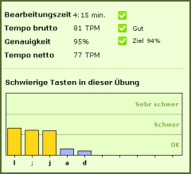

Der hier angegegebene Prozent-
satz ist das Verhältnis der richti-
gen Tasten zur Gesamtzahl der geschriebenen Tasten.
Je höher der Prozentsatz, desto geringer die Zahl der Fehler. Bei 100% haben Sie keinen Fehler gemacht.
Wichtig für die Berechnung ist die angenommene Wortlänge. Für jedes falsch geschriebene Wort erhalten Sie standardmäßig 10 Fehlerpunkte, egal, wie viele Fehler Sie in dem Wort gemacht haben. Der Prozentwert wird immer abgerundet, so wird z.B. aus 96.99 96% und nicht 97%.
Sie sollten versuchen, am Ende einer jeden Lektion eine Genauigkeit von mindestens 90% zu erreichen, um gute Fortschritte zu erzielen.
Mögliche Genauigkeitsziele in TypingMaster sind 90% (Leicht), 94% (Mittel) und 98% (Fortgeschritten).